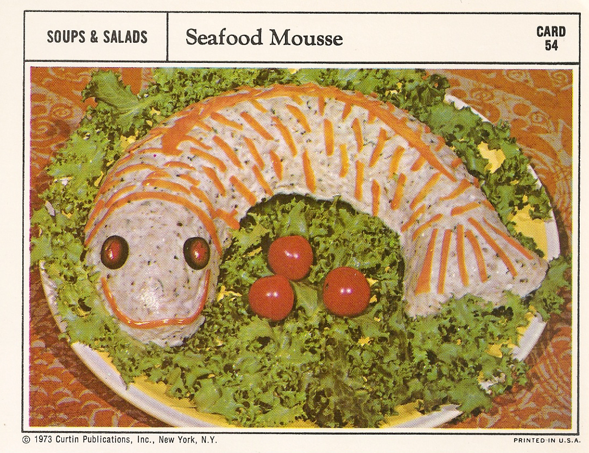

Seafood Mousse

A showstopper entree for your next bridge club or PTA meeting!
Ingredients
- 1 envelope unflavored gelatin
- 1/4 cup cold water
- 1/2 cup boiling water
- 1/2 cup mayonnaise
- 1 tbsp lime juice
- 1 tbsp grated onion
- 1 tsp salt
- 1/4 tsp salt
- 2 cups fish (halibut, salmon, or tuna), drained and finely chopped
- 1 tbsp capers, chopped
- 2 tbsp chopped parsley
- 1/8 tsp dried tarragon
- 1/8 tsp dried crushed marjoram
- 1 cup heavy cream, whipped
- Carrot strips and sliced olives
Steps
- Soften gelatin in cold water; add boiling water and stir until gelatin dissolves. Cool.
- Add mayonnaise, lime juice, onion, salt and pepper; mix well and chill until mixture begins to set.
- Fold in fish, capers, parsley, tarragon, marjoram, and whipped cream. Pour into an oiled fish mold and chill until firm.
- Unmold on serving platter and, if desired, garnish with carrot strips and stuffed olive slices.